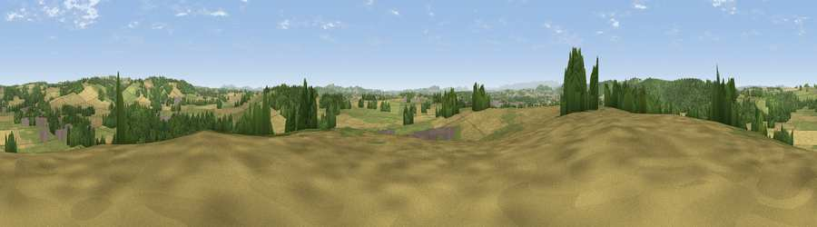

Ashgrove Hill
#16878 in England · top 48% of its area beats it · near Bodenham MoorWhere it is
The exact computed spot (SO 54025 49975). Click the marker for map links.
The view, rendered

A 360° render of this exact spot computed from the terrain model, tree cover and land cover — summer colours, afternoon light, calibrated against photographs of famous viewpoints. Real trees, hedges and buildings will differ in detail.
The panorama
Grey silhouette: terrain skyline in each direction (720 bearings, Earth curvature and refraction included). Dashed green: skyline with trees (+15 m) and buildings (+8 m) as obstacles. Blue strip: how far the ground is visible on each bearing.
Where the view opens
Wedge length = distance to the farthest visible ground on that bearing (vegetation-aware). Rings at 10, 25 and 50 km.
What fills the view
37% grassland · 36% cropland · 25% woodland · 2% built-up
Angular shares of the visible panorama (visual magnitude), not map area. Landscape diversity 0.51 (0–1 Shannon).
Key numbers
More beautiful places nearby
The staircase of upgrades: each row has a higher view potential than everything closer. Driving times are estimates from straight-line distance, calibrated against real road routing — check an actual route before setting out.
| Place | Direction | Drive | Score |
|---|---|---|---|
| Viewpoint near Bodenham | NW · 3 km | ~7 min | 71.4 |
| Viewpoint near Pencombe | NE · 6 km | ~13 min | 72.8 |
| Viewpoint near Canon Pyon | WSW · 8 km | ~16 min | 74.6 |
| Viewpoint near Westhope | WNW · 9 km | ~17 min | 77.0 |
| Viewpoint near Weobley | W · 13 km | ~24 min | 77.5 |
| Seagar Hill | SE · 13 km | ~24 min | 82.1 |
| Gatley Hill | NNW · 21 km | ~36 min | 82.6 |
| North Hill | E · 23 km | ~38 min | 86.8 |
52.14614, -2.67329 · source: dobih hill · position refined by local search. Computed location — check access rights before visiting.